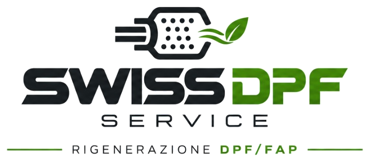
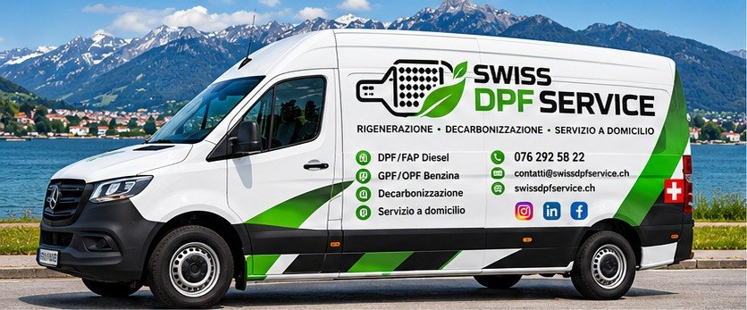
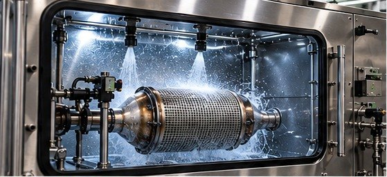
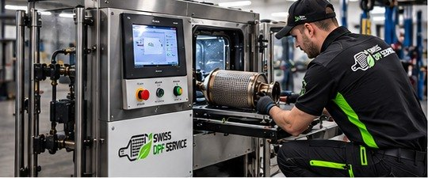
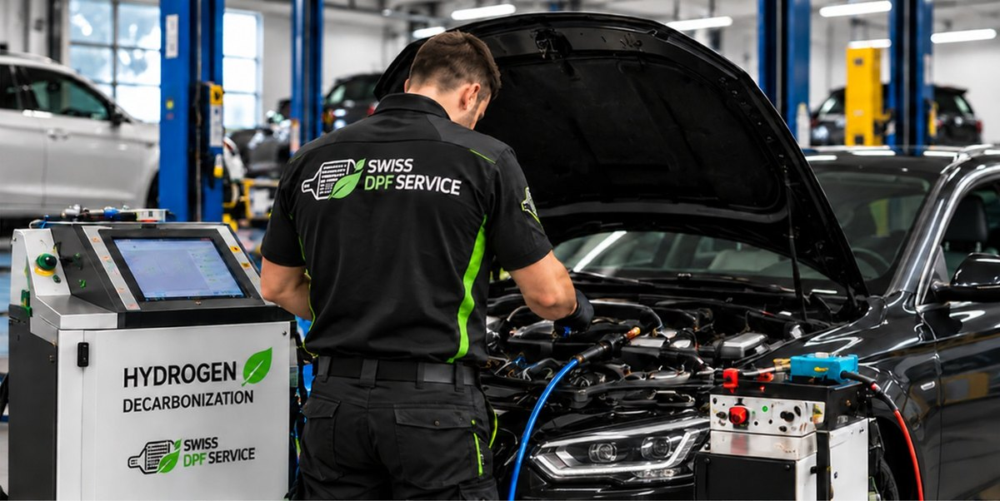
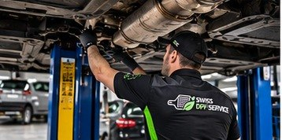

Spécialiste des systèmes de filtre à particules au Tessin
Régénération professionnelle DPF/FAP et GPF/OPF, décarbonisation préventive et services dédiés aux particuliers, aux entreprises et aux garages.


- Filtres diesel et essence
- Particuliers, entreprises et garages
- Figino · Canton du Tessin
Une compétence précise. Quatre domaines d’intervention.
Chaque demande commence par une évaluation : nous identifions avec vous le service adapté à votre filtre et à votre véhicule.

Régénération DPF/FAP
Service professionnel pour les filtres à particules des moteurs diesel, après évaluation de l’aptitude.
En savoir plus
Régénération GPF/OPF
Service pour les filtres à particules des moteurs à essence : Gasoline et Otto Particulate Filter.
En savoir plus
Décarbonisation préventive
Prévention et traitement des dépôts de calamine, selon les modalités techniques prévues.
En savoir plus
Service dans votre garage de confiance
Certains services dans votre garage de confiance, lorsque c’est techniquement possible et sur accord préalable.
En savoir plusLes images de ce site sont illustratives.
Dites-nous ce qui se passe, nous vous indiquons quoi évaluer.
Trois questions, moins d’une minute. Ce n’est pas un diagnostic : cela sert à orienter votre demande vers le bon service.
Le service à évaluer
Un contrôle approche ? Vérifiez si votre diesel est concerné par le contrôle MFK.
Ce n’est pas un diagnostic : nous vous confirmons si le service convient après avoir entendu votre cas.
Notre travail commence par le filtre.
Nous sommes spécialisés dans les systèmes de filtration des particules pour moteurs diesel et essence, la régénération professionnelle et la décarbonisation préventive du moteur. Une référence à Figino pour qui cherche un interlocuteur dédié à ces besoins spécifiques.
- 01 Attention portée au système et à son état
- 02 Évaluation de la faisabilité du service
- 03 Contact direct pour votre cas

Derrière SWISS DPF SERVICE, il y a une personne.
J’ai travaillé comme employé dans la gestion technico-commerciale d’entreprises du secteur de la construction et, pendant cinq ans, comme responsable des ressources humaines. L’envie de faire quelque chose pour moi-même, dans le monde des services, m’a conduit sur cette voie.
Je suis parti d’une expérience personnelle et j’ai approfondi mes connaissances techniques et mécaniques avec l’aide d’experts du secteur. J’ai ainsi fini par identifier des solutions plus économiques et plus écologiques que le remplacement du filtre. C’est ainsi qu’est né le projet, devenu réalité après un an et demi d’études et d’essais.
Du premier contact à la restitution.
Un parcours simple. Les modalités précises dépendent du service et du type de filtre.
Contact
Vous nous décrivez le véhicule, les symptômes et le service qui vous intéresse, par téléphone, e-mail ou formulaire.
Évaluation
Nous vérifions si le service convient à votre filtre et à votre cas, avant de poursuivre.
Devis
Nous vous communiquons les coûts et les délais pour votre cas précis, avant que vous ne confirmiez l’intervention.
Intervention
Nous réalisons le service convenu, selon les modalités prévues pour le type de filtre.
Restitution
Nous vous remettons le travail effectué et vous indiquons comment utiliser au mieux le véhicule.
Nous évaluons d’abord, puis nous décidons ensemble.
Tous les filtres ne se prêtent pas à la régénération. C’est pourquoi chaque intervention commence par une évaluation du cas, et nous vous disons honnêtement si le service convient.
- Évaluation de l’aptitude avant de confirmer l’intervention
- Coûts et délais communiqués pour votre cas précis
- Contact direct avec la personne qui s’occupe de votre filtre
- Aucune promesse de récupération garantie ou de compatibilité universelle
- Notre domaine est l’entretien des systèmes de filtre à particules, pas leur suppression
Votre diesel doit-il passer l’expertise MFK ?
Depuis le 1er janvier 2023, le contrôle périodique (MFK) vérifie le fonctionnement du filtre à particules des véhicules diesel par une mesure des particules. Un voyant éteint ne suffit pas toujours à connaître l’état du filtre.
Un contrôle approche ?
Décrivez-nous le véhicule et les voyants que vous constatez : nous évaluons ensemble si une intervention sur le filtre a du sens, sans promesse sur le résultat du contrôle officiel.
Votre garage. Notre spécialisation.
Un canal dédié aux garages intéressés par les services professionnels pour les systèmes de filtre à particules. Contactez-nous pour connaître le programme de garages partenaires conventionnés SWISS DPF SERVICE et envisager une collaboration.
Un contact. Une compétence spécifique.
DPF/FAP pour moteurs diesel
GPF/OPF pour moteurs à essence
Services à évaluer selon le cas
Les modalités et conditions de la convention sont définies directement avec l’entreprise.
Plus proches de vos besoins.
Dans votre garage de confiance : nous vérifions ensemble quels services peuvent y être réalisés ou organisés, selon la faisabilité technique.
Commençons par les choses claires.
Quelle est la différence entre DPF/FAP et GPF/OPF ?
DPF (Diesel Particulate Filter) et FAP (filtre à particules) désignent le filtre à particules des moteurs diesel. GPF (Gasoline Particulate Filter) et OPF (Otto Particulate Filter) sont les filtres à particules des moteurs à essence.
Un filtre peut-il toujours être régénéré ?
Non. L’aptitude dépend de l’état du filtre et du cas précis : un filtre endommagé, par exemple fissuré, peut ne pas être régénérable. C’est pourquoi nous évaluons chaque cas avant de confirmer l’intervention.
Combien coûte le service et quels sont les délais ?
Cela dépend du type de filtre et du service demandé. Décrivez-nous le véhicule et le problème : nous vous répondons avec une évaluation et un devis dédiés.
Le voyant du filtre est allumé : que dois-je faire ?
Le voyant indique que le système a détecté une anomalie. Rouler longtemps avec un filtre encrassé peut aggraver la situation : mieux vaut le faire évaluer. Contactez-nous en décrivant les voyants et les symptômes.
Le premier pas ? Un contact direct.
Dites-nous de quoi vous avez besoin, pour votre véhicule ou pour votre garage. Nous évaluons la demande et vous indiquons le service adapté.
SWISS DPF SERVICEVia Pree 1
6918 Figino – Canton du Tessin (CH)
Itinéraire avec Google Maps · Apple Maps